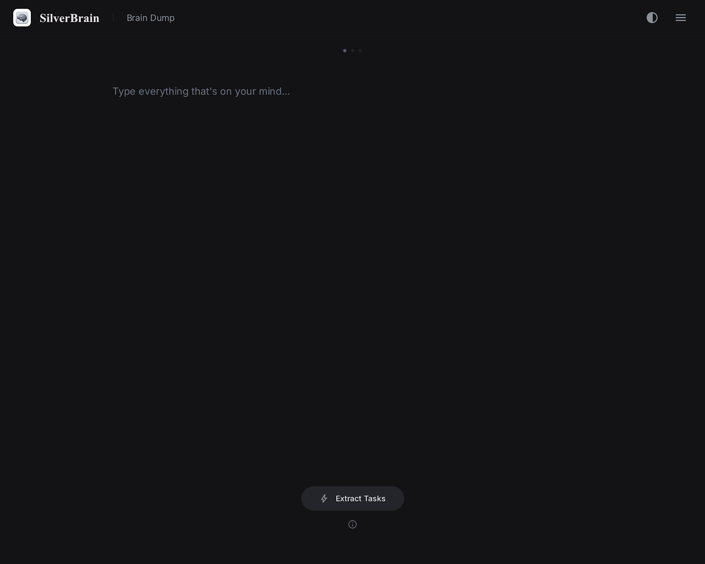
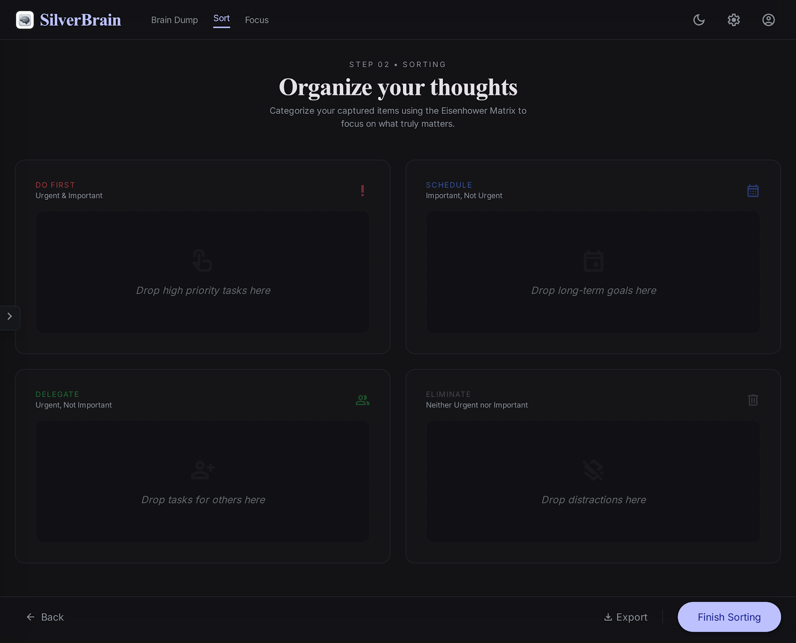
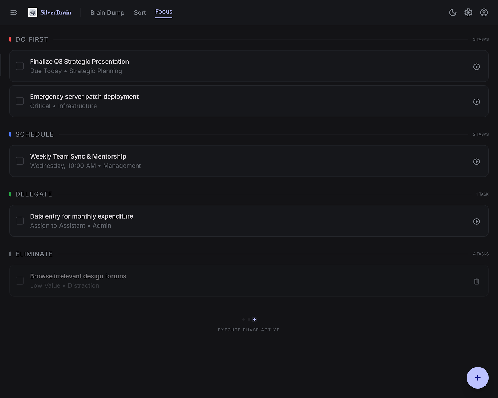
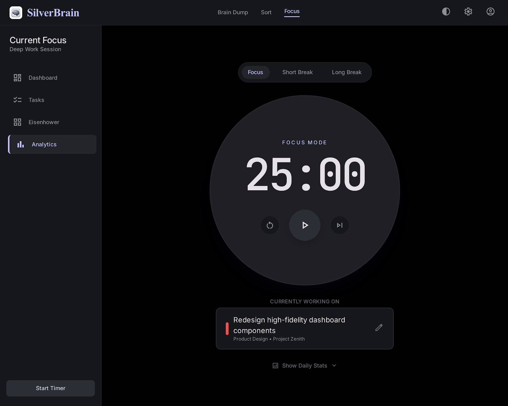

1
Brain Dump
A distraction-free canvas for freeform capture. Write everything — messy thoughts, tasks, half-formed ideas. Press ⌘/Ctrl+Enter to extract.

Desktop productivity
Dump everything in your head, let AI extract the tasks, sort them on an Eisenhower Matrix, and execute with Pomodoro focus — all in one calm desktop app.

How it works
A single flow from messy thoughts to focused execution — no context switching between apps.
A distraction-free canvas for freeform capture. Write everything — messy thoughts, tasks, half-formed ideas. Press ⌘/Ctrl+Enter to extract.

AI extracts your tasks and pre-sorts using learned preferences. Drag them into the Eisenhower Matrix — Do First, Schedule, Delegate, or Eliminate.
A persistent checklist grouped by quadrant with done-state and badges. Send any item straight to the Focus timer when you're ready to work.

Pomodoro cycles with configurable focus, short break, and long break durations. Stay in flow with desktop notifications when each sprint ends.

Built for you
Everything stays on your machine. You choose the LLM provider.
Anthropic, OpenAI, Google Gemini, or local Ollama — switch anytime in Settings.
The app learns your Eisenhower preferences over time and gets smarter with each session.
Every brain dump becomes a titled session you can restore from history at any time.
Full UI in English or Egyptian Arabic with RTL layout and native typography.
Overlay title bar, traffic-light controls, and a collapsible sidebar for a calm workspace.
⌘/Ctrl+Enter, sidebar toggle, session history, and more — press ⌘/Ctrl+/ for the full list.
Settings, sessions, and sort memory are stored in plain files on your machine. Nothing is uploaded except the LLM calls you configure — and only to the provider you choose.
Free, open source, and built with Tauri for macOS, Linux, and Windows.
Download from GitHub Releases